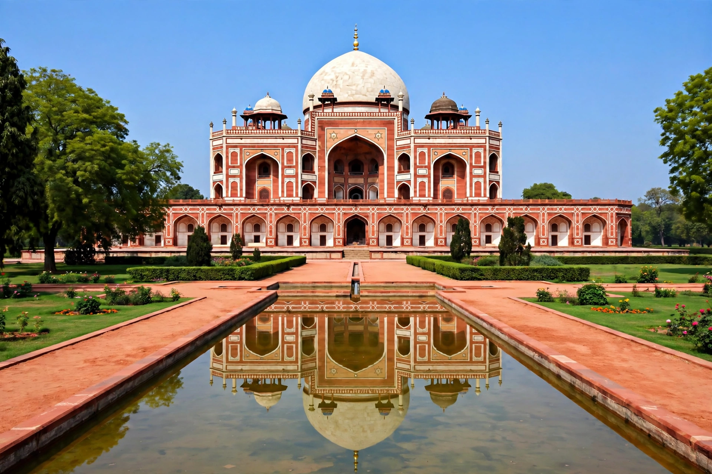

From Wikipedia, the free encyclopedia
| Humayun | |
 Humayun's Tomb in Delhi, commissioned in 1569–70 | |
| Reign | 26 December 1530 – 17 May 1540; 22 February 1555 – 27 January 1556 |
| Predecessor | Babur (first reign); Islam Shah Suri (second) |
| Successor | Sher Shah Suri (first reign); Akbar (second) |
| Born | 6 March 1508, Kabul |
| Died | 27 January 1556 (aged 47), Delhi |
| Burial | Humayun's Tomb, Delhi |
| Spouse | Hamida Banu Begum, among others |
| Father | Babur |
| Mother | Maham Begum |
Nasir al-Din Muhammad (Persian: نصیرالدین محمد; 6 March 1508 – 27 January 1556), commonly known by his regnal name Humayun (Persian: همایون, lit. "the fortunate/august"), was the second emperor of the Mughal Empire, who ruled over territory in what is now Eastern Afghanistan, Bangladesh, Northern India, and Pakistan from 1530 to 1540 and again from 1555 to 1556. Like his father, Babur, he lost his empire early in his reign but with Persian aid regained it, leaving an expanded realm for his son Akbar.
Humayun was the eldest son of Babur, the Timurid prince who founded the Mughal Empire by defeating Ibrahim Lodi at the First Battle of Panipat in 1526. He campaigned with his father in India and governed Badakhshan and other appanages. Succeeding Babur in December 1530, he inherited an empire that was newly conquered and loosely held, and faced challenges from Afghan chiefs in the east and from his own brothers — Kamran, Askari and Hindal — to whom, following Timurid custom, he granted semi-independent territories, a division that weakened him.
In Gujarat and Malwa Humayun campaigned successfully in 1535, but the Afghan leader Sher Shah Suri built power in Bihar and Bengal. Humayun was defeated by Sher Shah at Chausa in 1539 and decisively at Kannauj (Bilgram) in May 1540, losing the empire entirely. He fled westward through Sindh; during this exile his son Akbar was born at Umerkot in 1542 to Hamida Banu Begum. Humayun eventually found refuge at the Safavid court of Shah Tahmasp I in Persia, where — in return for military aid, and after delicate religious negotiation — he received troops and spent time absorbing Persian artistic and administrative influence.
With Persian support Humayun retook Kandahar and Kabul from his brother Kamran in 1545 and, after the death of Sher Shah's weaker successors, marched into India. His general Bairam Khan defeated Sikandar Suri at Sirhind in June 1555, and Humayun re-entered Delhi in July 1555. Restoration was brief: in January 1556 Humayun fell down the steep stone stairs of the Sher Mandal, his library in Delhi's Purana Qila, while hurrying to respond to the call to prayer, and died of his injuries days later. He was succeeded by the thirteen-year-old Akbar under Bairam Khan's regency.
Humayun was famed for his interest in astronomy, astrology, poetry and painting. His court included Persian master painters such as Mir Sayyid Ali and Abd al-Samad, whose work in his atelier — begun during exile — laid the foundation of the Mughal school of miniature painting. His eventful life was recorded in the Humayun-nama by his sister Gulbadan Begum. His tomb in Delhi, commissioned by his senior widow Baji Begum (Haji Begum) and designed by the Persian architect Mirak Mirza Ghiyas, was the first great garden-tomb of the Mughal dynasty and a direct forerunner of the Taj Mahal.